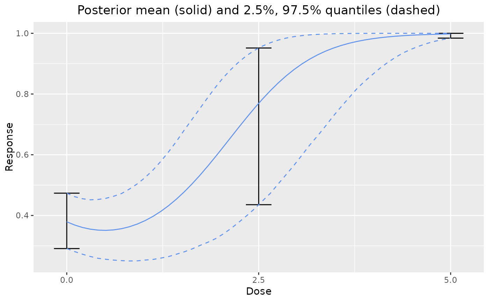

Plot the prior over the dose range. This is intended to help the user choose appropriate priors.
dreamer_plot_prior(
n_samples = 10000,
probs = c(0.025, 0.975),
doses,
n_chains = 1,
...,
times = NULL,
plot_draws = FALSE,
alpha = 0.2
)the number of MCMC samples per MCMC chain used to generate the plot.
A vector of length 2 indicating the lower and upper percentiles
to plot. Not applicable when plot_draws = TRUE.
a vector of doses at which to evaluate and interpolate between.
the number of MCMC chains.
model objects. See model and
examples below.
a vector of times at which to plot the prior.
if TRUE, the individual draws from the prior are plotted.
If FALSE, only the prior mean and quantiles are drawn.
the transparency setting for the prior draws in (0, 1].
Only applies if plot_draws = TRUE.
The ggplot object.
# Plot prior for one model
set.seed(8111)
dreamer_plot_prior(
doses = c(0, 2.5, 5),
mod_quad_binary = model_quad_binary(
mu_b1 = -.5,
sigma_b1 = .2,
mu_b2 = -.5,
sigma_b2 = .2,
mu_b3 = .5,
sigma_b3 = .1,
link = "logit",
w_prior = 1
)
)

# plot individual draws
dreamer_plot_prior(
doses = seq(from = 0, to = 5, length.out = 50),
n_samples = 100,
plot_draws = TRUE,
mod_quad_binary = model_quad_binary(
mu_b1 = -.5,
sigma_b1 = .2,
mu_b2 = -.5,
sigma_b2 = .2,
mu_b3 = .5,
sigma_b3 = .1,
link = "logit",
w_prior = 1
)
)
# plot prior from mixture of models
dreamer_plot_prior(
doses = c(0, 2.5, 5),
mod_linear_binary = model_linear_binary(
mu_b1 = -1,
sigma_b1 = .1,
mu_b2 = 1,
sigma_b2 = .1,
link = "logit",
w_prior = .75
),
mod_quad_binary = model_quad_binary(
mu_b1 = -.5,
sigma_b1 = .2,
mu_b2 = -.5,
sigma_b2 = .2,
mu_b3 = .5,
sigma_b3 = .1,
link = "logit",
w_prior = .25
)
)